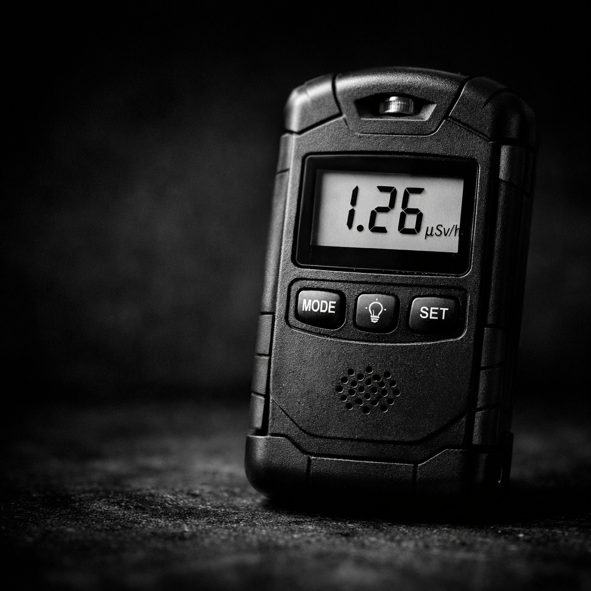
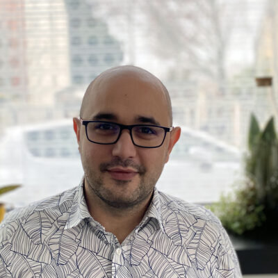
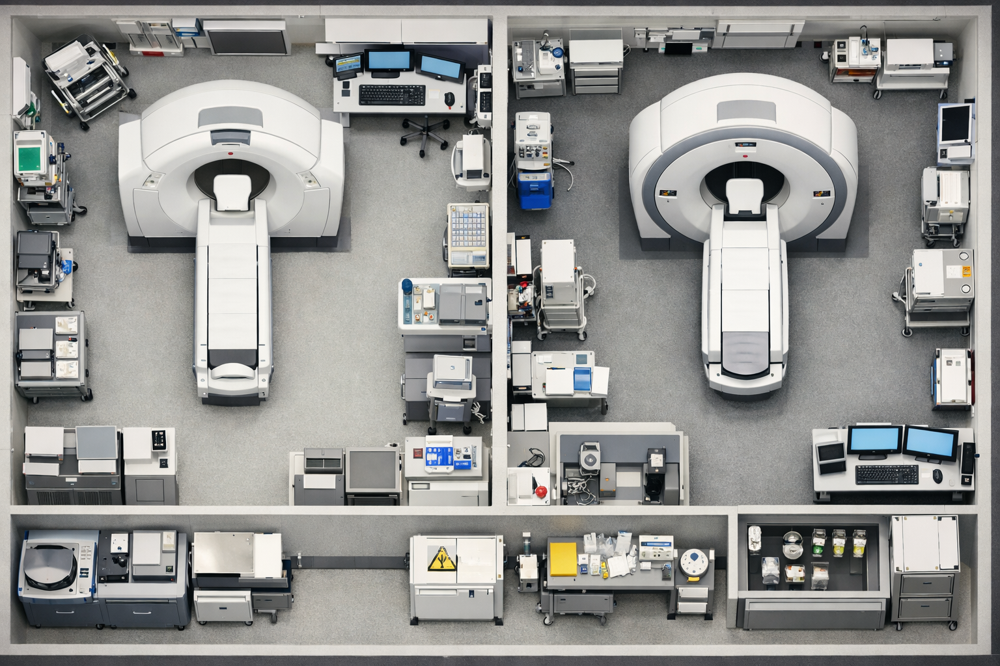
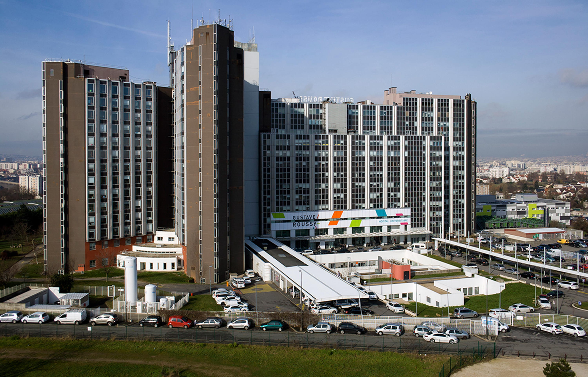
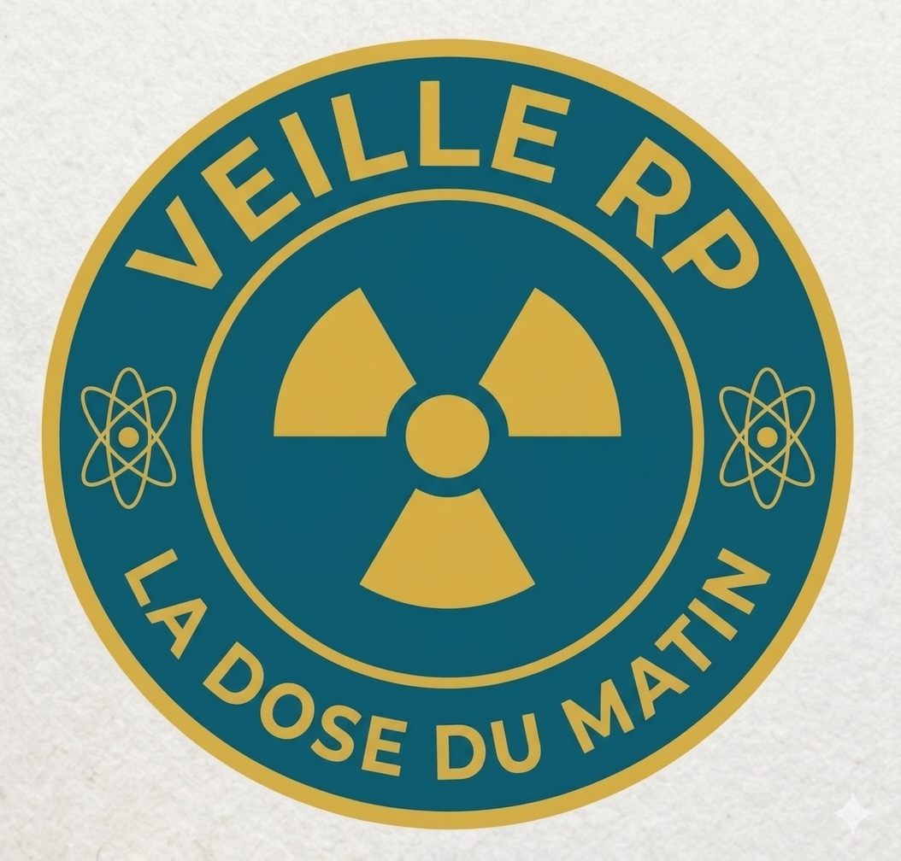
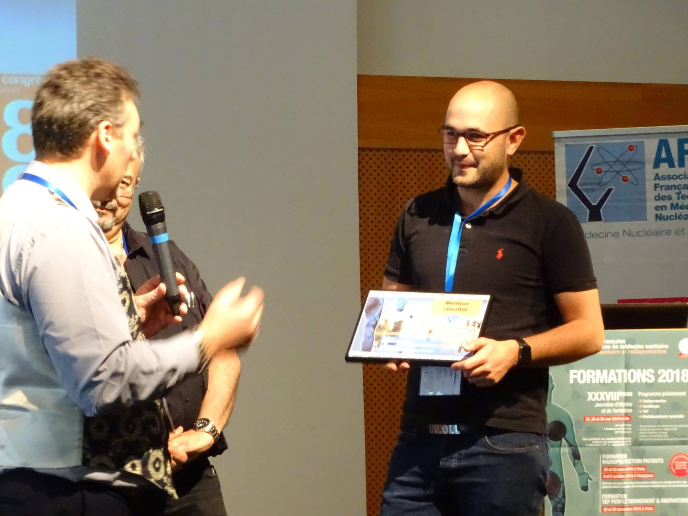
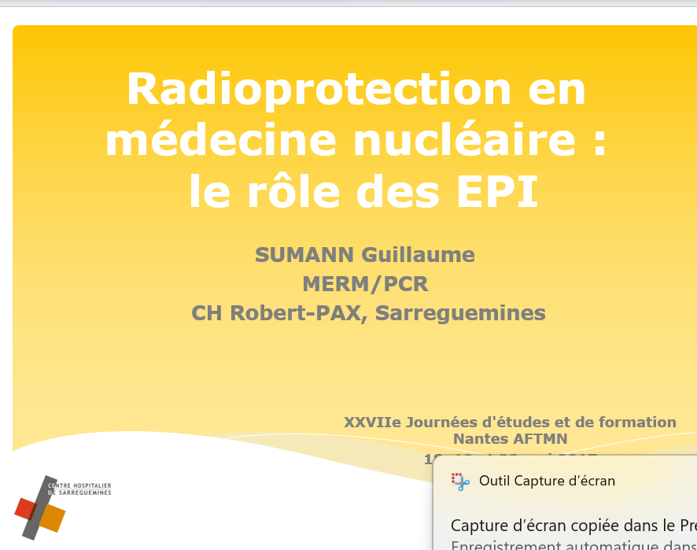
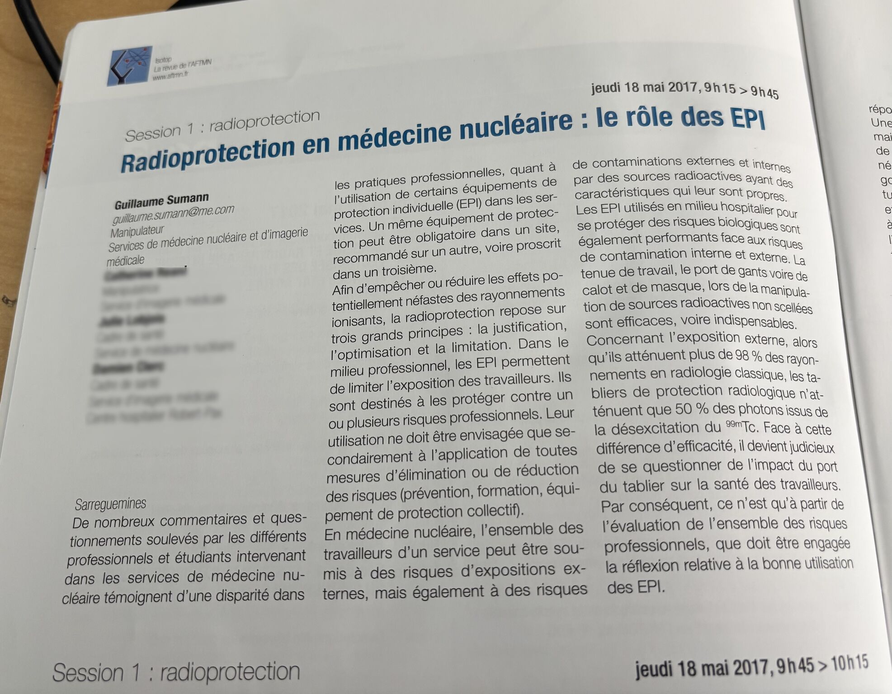
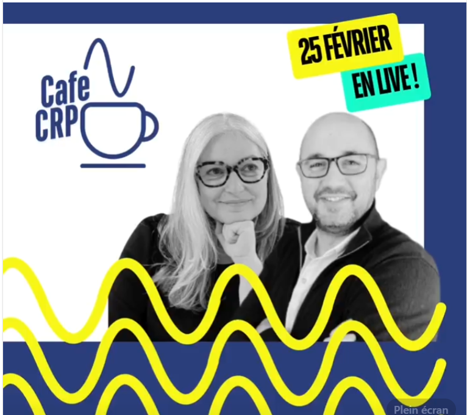

Du geste technique à la vision d'ingénieur —
12 ans à concevoir, piloter et transmettre.
"La radioprotection n'est pas une contrainte.
C'est une discipline d'ingénieur."
Manipulateur de formation, j'ai progressivement glissé du soin vers l'expertise. Pas par hasard, mais par curiosité systématique : comprendre pourquoi avant de faire comment. Aujourd'hui, je conçois des dispositifs de radioprotection, je pilote des dossiers réglementaires complexes, et je transmets ce savoir à la prochaine génération de professionnels.
Curieux par nature. Rigoureux par métier. Transmetteur par vocation.

Cliquez pour explorer chaque domaine
En 7 ans chez Esprimed, j'ai piloté une cinquantaine de dossiers réglementaires : autorisations ASN, enregistrements, déclarations. Chaque dossier est un projet à part entière — analyse du risque, rédaction technique, défense devant l'autorité.
Deux études structurantes ont marqué ma pratique. La première : évaluation des rejets gazeux d'un service de médecine nucléaire en plein Paris-13, avec une crèche à proximité. Mesures terrain, modèle gaussien de Pasquill-Gifford, défense devant l'ASN et l'IRSN. Autorisation accordée.
La seconde : évaluation des rejets liquides au Centre de Cancérologie de la Sarthe via l'outil CIDRRE de l'IRSN — dosimétrie des égoutiers, modélisation semi-générique.
Depuis 2016, j'enseigne la radioprotection aux étudiants en DTS IMRT au Lycée Saint-Vincent-de-Paul à Algrange. Sans PowerPoint. Par le questionnement, le cas terrain, l'interaction.
J'ai aussi co-créé le Café des CRP — un webinaire interactif en direct réunissant 50+ professionnels, pensé pour briser l'isolement des PCR dans leurs établissements.
J'ai conçu et déployé chez Esprimed le protocole complet de vérification périodique des appareils de mesure — sources de constance, feuilles de calcul, mode opératoire normalisé. Ce dispositif a directement contribué à l'obtention de l'accréditation COFRAC ISO 17025 de l'entreprise.
J'anime également un webinaire dédié aux vérifications périodiques, diffusé sur le site d'Esprimed.
Le projet le plus structurant : pilotage de la certification OCR d'Esprimed selon le référentiel ASN. Plusieurs mois de travail, coordination interne, rédaction de l'intégralité du système documentaire, suivi des audits, échanges avec l'organisme certificateur QUALIANOR. Certification obtenue.
En parallèle : gestion de 10 à 15 projets clients simultanés — hôpitaux, cliniques, sites industriels.
La radioprotection évolue vite. Très vite. J'ai fait de la veille réglementaire un axe professionnel à part entière : analyse des textes, synthèses diffusées sur LinkedIn (771 abonnés), et création de La Dose du Matin — canal WhatsApp de veille quotidienne pour les professionnels RP.


Tous les matins, les professionnels de la radioprotection reçoivent l'essentiel : textes ASNR, Légifrance, incidents, décisions. Un projet né d'un constat terrain : l'information réglementaire est dispersée, complexe, chronophage. La Dose du Matin la rend accessible en 2 minutes.

Questionnaire en ligne pour mon mémoire d'ingénieur : étude sur le déclassement des travailleurs faiblement exposés en milieu hospitalier. Construit et hébergé sur GitHub Pages.
Accéder au questionnaire →Application HTML complète pour les étudiants MER. 5 modules : fiches radionucléides (ICRP 107), simulation de décroissance, visualisation de chaînes, calculateur de débit de dose, quiz interactif.

Prix Meilleur Résultat



Ancré en Grand Est · Disponible · Ouvert aux opportunités
📍 Pays de Bitche, Moselle — Grand Est